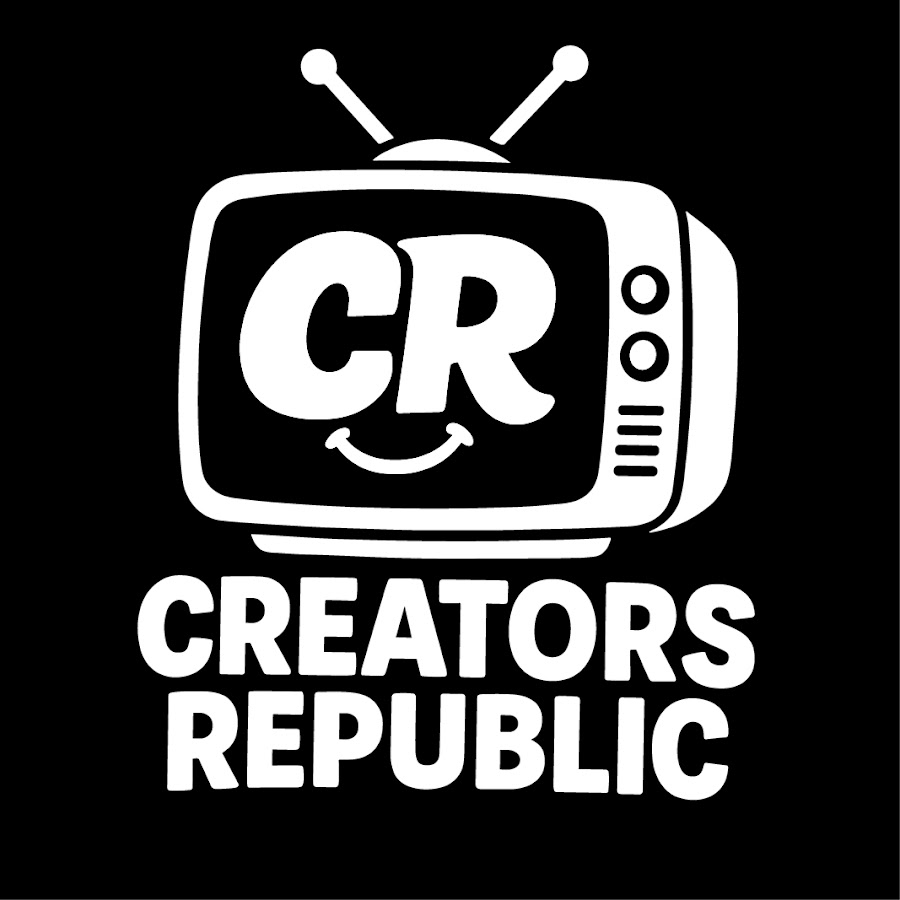

Professional video editor specializing in high‑engagement social media content, short‑form storytelling, and cinematic long‑form edits.
TikTok • Reels • Shorts

YouTube & documentary edits
Available for freelance editing and creator collaborations.